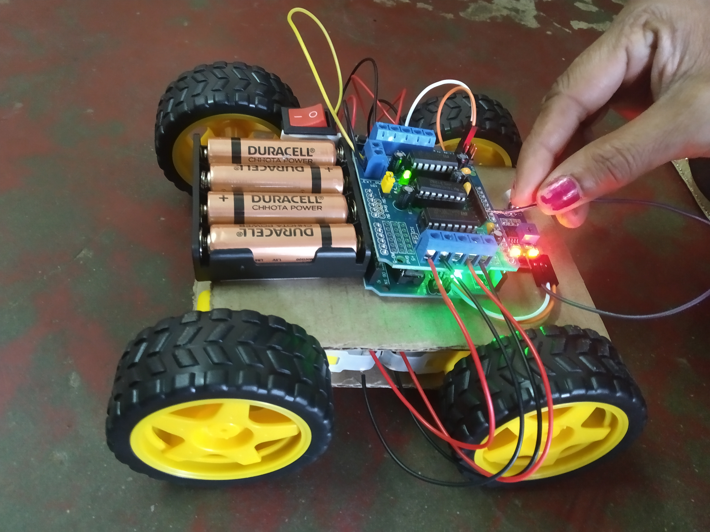

Projects
Online Bus Management System
- Description:The main objective this project is to developing a GUI based Automated
system, which will cover all the information related to the Bus Timings,Bus
Bookings,Customer Information which is used in our daily life. To know the facts and
understanding the problem in detail, System Analysis is carried out. This activity
includes programming, testing and integration.
- Responsibilities:Worked as an active member in a group of 2 people and contributed in
programming and testing process.
- Software Used:XAMPP Server
Snapchat Review Analysis
- Description:The aim of snapchat review analysis is to provide insight into the public’s opinions, emotions and feelings towards a particular event.
The objective is to extract and analyze the sentiments,reviews and emotions expressed in snaps on the snapchat.It is the process of using natural language processing techniques to extract and analyze the sentiment, opinion, and emotions expressed in Snaps.
Sentiment analysis is a type of study which enables the researchers or product developers to analyze users comments, opinions or expressions towards certain products or services .
In this We are going to be looking at the sentiments, in other words, opinion or belief, of all 10k reviews and see if each review is Positive, Negative, or Neutral.
- Language Used:Python
- Software Used:Jupyter notebook and libraries like VaderSentiment,Wordcloud,TextBlob,NTLK and so on to perform review analysis on snapchat data.
Detection Of Disorders Of Consciousness(Doc) In Brain Injuries Using EEG Connectivity Using KNN Alogithm
- Description:The aim of this project is using DL & ML algorithm analyzing EEG data for the ultimate goal of identifying brain injury detection.We implemented proposed Deep learning Algorithm for high accuracy and accurate prediction status of our project.The Main Advantage of this project is It is efficient for large number of datasets,
The experimental result is high when compared with existing system,Time consumption is low,
Provide accurate prediction results.
- Language Used:Python
- Software Used:Anaconda Navigator – Spyder
Clap Control Car
- Description:This Project is about how Clap Control Car will helpful for children.
Clap Control Car based on Arduino aims to control the car using sound sensor.
The sensor and L289D motor driver are connected to the Arduino to transmit data.
The sound sensor senses our clap sounds and shows where to move whether it is forward,backward,left or right.
Nowadays children are playing with remote control cars.
By using remote control cars they are becoming lazy and it is wastage of amount.
To overcome this we built a car that is controlled by clap sounds of our hands.
It will be very useful for children.
- Language Used:C Programming
- My Model:

Back
Next